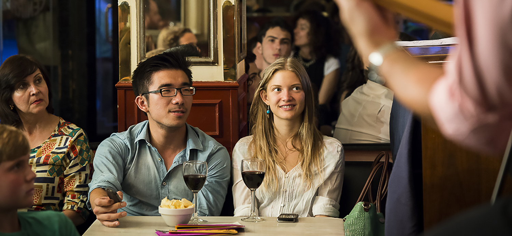
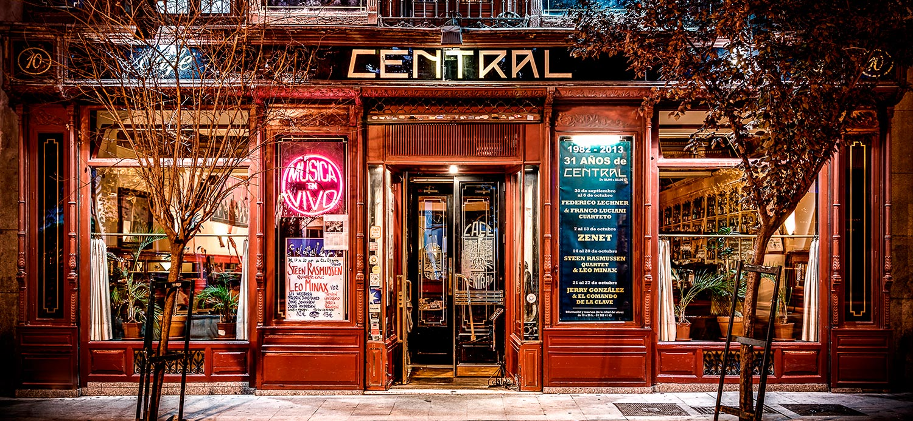
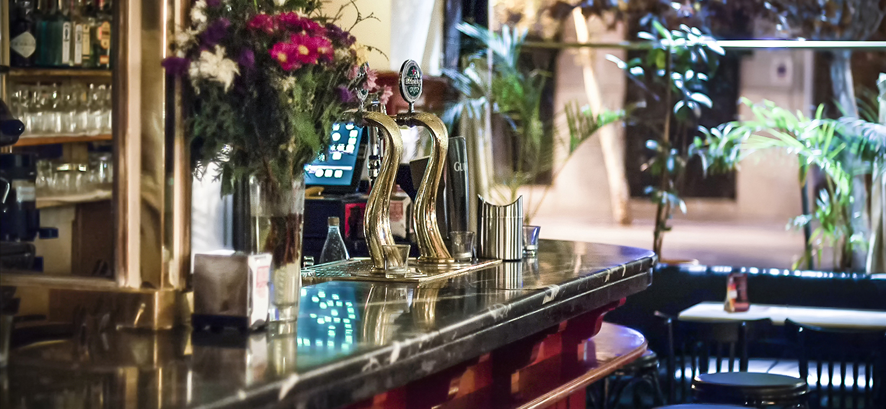

Café Central, más de 30 años de conciertos
La carta

Descubre nuestra amplia carta elaborada por Micky, nuestro cocinero donostiarra. Entrantes, ensaladas, tostas y pinchos entre otros platos, podrás comer mientras disfrutas de un estupendo concierto.
Programa

Aquí conocerás nuestra programación mensual con todos los artistas que nos acompañarán sobre el escenario. Conciertos con los mejores músicos nacioneles
internacionales.
Reservas

Reservamos cada día la mitad del aforo. Consulta el plano y reserva tu sitio por teléfono 91 369 41 43, de 18:00h a 20:00h, todos los días.
Inicio
Conciertos
El club
Localización
Contacto
C.Valenciana
Más noticias
Deportes
Economía
Opinión